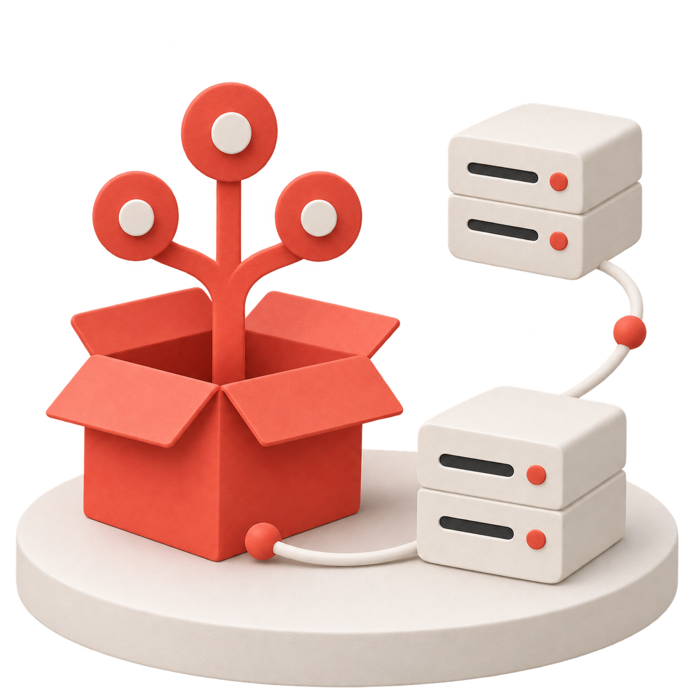
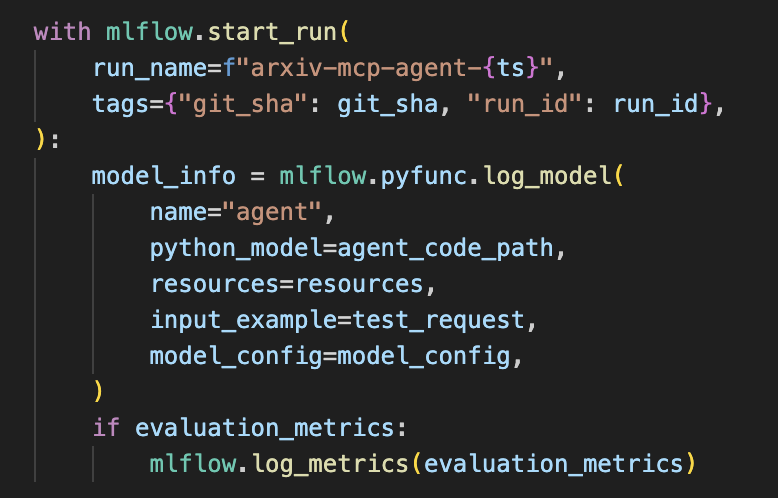
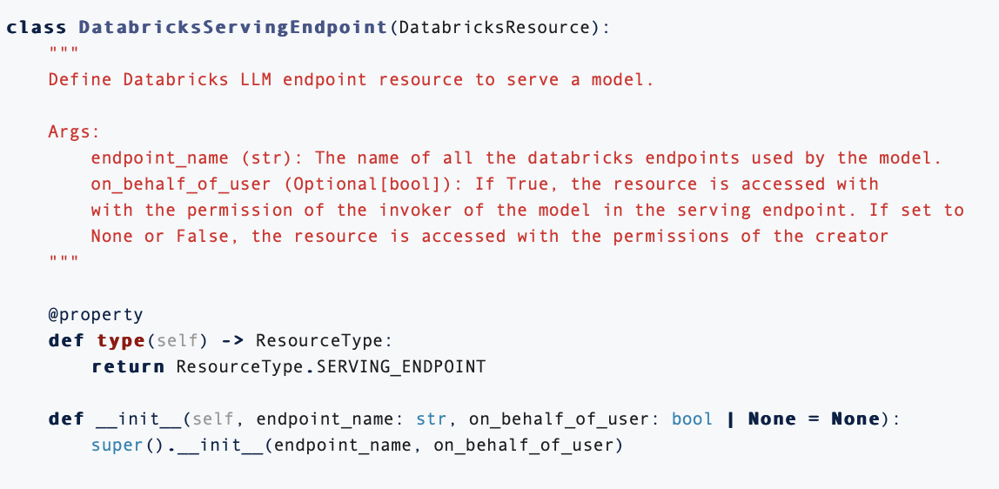
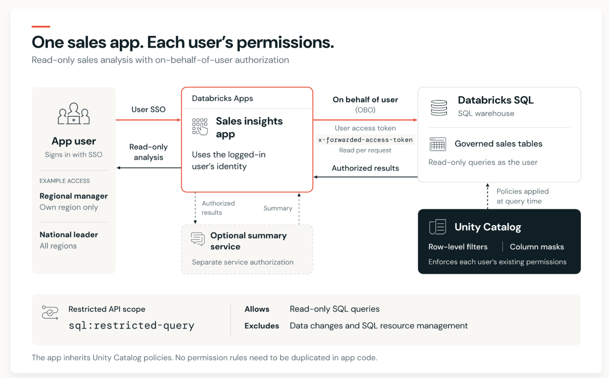
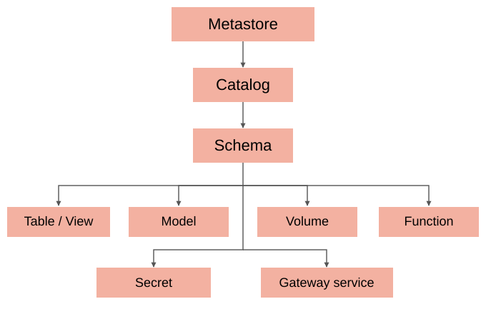
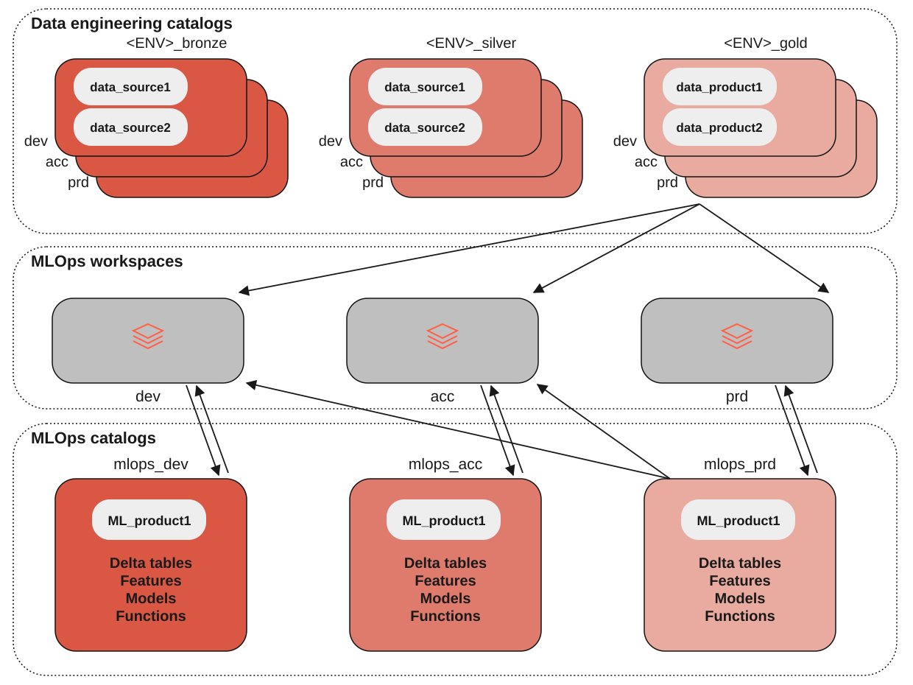
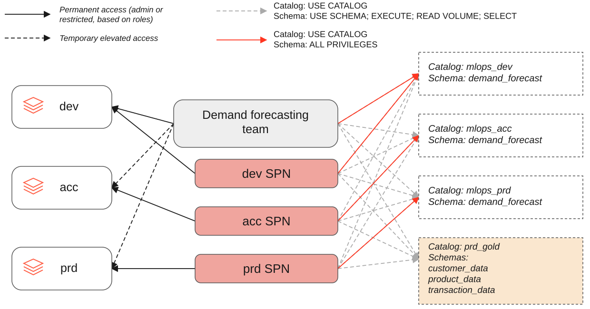
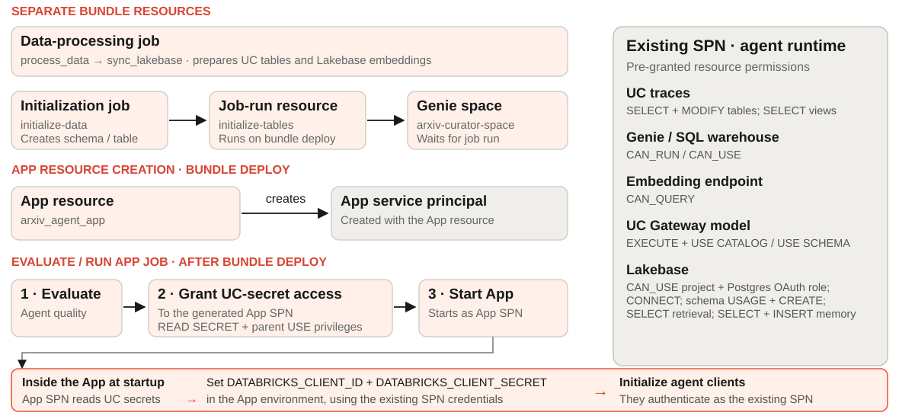
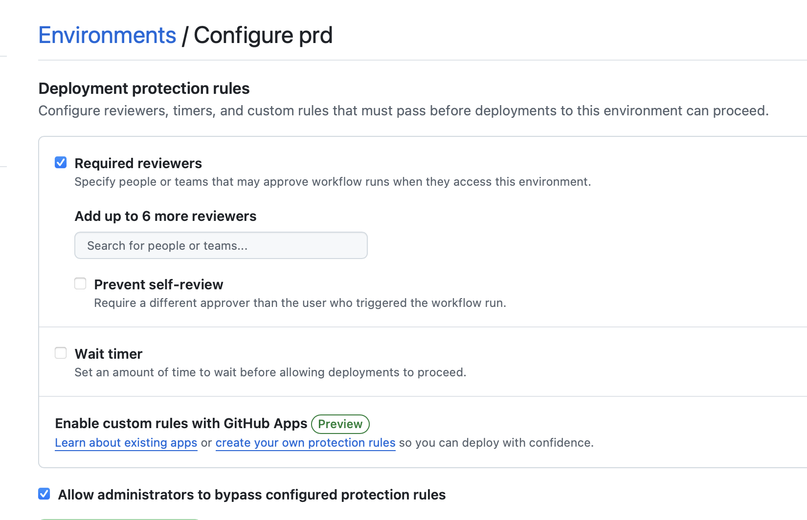
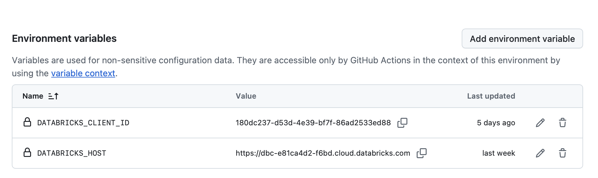

LECTURE 5
Deploying
AI agents
on Databricks
18 November 2026
16:00–18:00 Amsterdam

LECTURE 5
18 November 2026
16:00–18:00 Amsterdam

What we will cover today

| DIMENSION | DATABRICKS APPS | MODEL SERVING |
|---|---|---|
| Agent packaging | Deploy code directly — no MLflow log/register step required | Log model → register → deploy |
| Deployment complexity | Bundle defines App resource; bundle run deploys the code | Model logging, dependencies and endpoint configuration |
| Model versioning | Code versioning in Git; no registered model version required | MLflow model versions and lineage in Unity Catalog |
| Rollback | Redeploy a previous source revision | Serve a previous registered model version |
| Pre-deployment evaluation | Gate before bundle run publishes the App | Gate before updating the served model version |
| DIMENSION | DATABRICKS APPS | MODEL SERVING |
|---|---|---|
| Python environment | pyproject.toml + uv.lock | Captured at model logging / environment packing |
| Python version flexibility | Select a compatible interpreter; downloads require network access | Captured at logging; use a supported serving environment |
| Runtime context | App process, outside a notebook; explicit configuration required | Serving process, outside a notebook; explicit configuration required |
| Memory | 6 GB Medium · 12 GB Large 48 GB XLarge in supported regions | CPU: 4 GB per concurrency CPU_MEDIUM: 8 GB · CPU_LARGE: 16 GB |
| Scaling | Horizontal scaling; no automatic scale-to-zero. Can stop explicitly through the SDK | Autoscaling; scale-to-zero where supported |
| On-behalf-of-user auth | Yes With user authorization configured | Yes With a supported agent auth path |
| Resource | Access | Where granted |
|---|---|---|
| MLflow traces in UC | SELECT + MODIFY on tables | Platform setup Demonstrated in notebook 5.1 / the CD Databricks job |
| Genie space | CAN_RUN | Genie bundle resource |
| Lakebase | CAN_USE on project Postgres OAuth role for the SPN; CONNECT; schema USAGE + CREATE; SELECT for retrieval; SELECT + INSERT for memory | Platform setup CAN_MANAGE for project grants; databricks_superuser for Postgres grants |
| SQL warehouse | CAN_USE | Platform setup |
| Embedding endpoint | CAN_QUERY | Platform setup |
| UC Gateway chat model | EXECUTE + parent USE | Platform setup |
| Existing SPN · pros | Existing SPN · cons |
|---|---|
| Platform-controlled access. Users do not need management rights on every resource. An Azure SPN can also have Azure resource permissions. | Calls use that SPN’s permissions. This does not implement on-behalf-of-user access. |
Our choice today: existing SPN with a Databricks App
1 · Grant access before running the App
w = WorkspaceClient()
app = w.apps.get(name=cfg.agent_app_name)
grant_app_secret_access(
w, cfg.catalog, cfg.schema,
app.service_principal_client_id,
)Notebook 5.1 or the CD Databricks job grants the generated App SPN parent USE permissions and explicit READ SECRET on both credentials.
ALL PRIVILEGES is not enough: READ SECRET must be granted explicitly.
2 · Read secrets and set env vars at startup
workspace = WorkspaceClient() # App identity
os.environ["DATABRICKS_CLIENT_ID"] = (
workspace.secrets_uc.get_secret(
full_name=f"{cfg.catalog}.{cfg.schema}.databricks_client_id",
include_value=True,
).effective_value
)
os.environ["DATABRICKS_CLIENT_SECRET"] = (
workspace.secrets_uc.get_secret(
full_name=f"{cfg.catalog}.{cfg.schema}.databricks_client_secret",
include_value=True,
).effective_value
)
os.environ["DATABRICKS_HOST"] = workspace.config.host3 · Initialize clients after setup_auth(cfg). They use the existing SPN. Notebook 5.1 / the CD Databricks job grants its UC trace access.
Not part of the course code · Example from the MLOps with Databricks book


Without on_behalf_of_user: access is based on the creator/deployer’s permissions.
Not part of the course code · Example from the MLOps with Databricks book

on_behalf_of_user=True → use the caller’s permissions for this resource.
Not part of the course code · Example from the MLOps with Databricks book

Resource metadata in the book’s logged model.

Source: Databricks · Building permission-aware Apps with on-behalf-of-user authorization
resources:
apps:
sales_insights:
name: sales-insights
source_code_path: ./
user_api_scopes:
- sql:restricted-query
- genieRead-only SQLsql:restricted-query
Ask Geniegenie
Declare only the APIs used on the user’s behalf.
Adapted example · Databricks source and implementation guidance
from flask import request, abort
from databricks import sql
def query_as_user(question_sql):
token = request.headers.get(
"x-forwarded-access-token"
)
if not token:
abort(401, "User token required")
with sql.connect(
server_hostname=WORKSPACE_HOSTNAME,
http_path=WAREHOUSE_HTTP_PATH,
access_token=token,
) as connection:
with connection.cursor() as cursor:
cursor.execute(question_sql)
return cursor.fetchall()Flask example
Call this function inside the request handler.
The connector receives the current user’s OAuth token.
Read the header on every request. Do not save it in global state.
Adapted example · Databricks source and implementation guidance
from mlflow.genai.agent_server import get_request_headers
from databricks.sdk import WorkspaceClient
from databricks_mcp import DatabricksMCPClient
from fastapi import HTTPException
def genie_for_request(host, space_id):
token = get_request_headers().get(
"x-forwarded-access-token"
)
if not token:
raise HTTPException(401, "User token required")
user_client = WorkspaceClient(
host=host, token=token, auth_type="pat"
)
return DatabricksMCPClient(
server_url=f"{host}/api/2.0/mcp/genie/{space_id}",
workspace_client=user_client,
)For demonstration purposes
Not used in the course code.
Read the token during invoke or stream, when a user request is active.
auth_type="pat" selects the forwarded token over SPN credentials in the environment. The token itself is OAuth.Keep the existing SPN client for shared operations.
Adapted example · Databricks source and implementation guidance
Two scopes. Choose whose permissions each operation should use; one App can contain both.
| Scope | Examples | Identity and authorization |
|---|---|---|
| App-scoped | Write application metrics Read shared configuration | App SPN or existing acting SPN Uses that SPN’s resource permissions. Our course uses the existing SPN. |
| User-scoped (OBO) | Query sales data for the signed-in user Ask Genie using that user’s access Read a report the user has access to | Signed-in user User token + required API scopes + the user’s resource permissions. |
Databricks article · keep app-owned and user-owned operations separate
Assets use a three-part name:
catalog.schema.asset
Catalogs contain schemas.
Schemas contain assets.
Also include UC Gateway services,
MLflow trace tables and UC secrets.


Account administrators manage workspaces, UC metastores and account settings.


Also in UC: Gateway model services, secrets, and MLflow trace tables and views.

UC trace ingestion requires explicit SELECT + MODIFY; grant READ SECRET for secret values.
bundle:
name: course-code-hub
engine: direct
databricks_cli_version: ">=1.23.0"
# CI pins CLI 1.24.0.
# Release inputs include git_sha and schedule_pause_status.depends_on functionality. Use the CLI version required by the bundle.Not used in the course. Useful for developing together when team members are not workspace admins.
Set the run identity on each resource
resources:
jobs:
process_data:
name: process-data
run_as:
group_name: arxiv-team
pipelines:
arxiv_pipeline:
name: arxiv-pipeline
run_as:
group_name: arxiv-teamResources created inside the run belong to the group, so members can manage them together.
Create a job while assuming the group to make the group its owner and run identity.
Use an account group assigned to the workspace; grant it access to source files, compute and data.

| Variable | Available in every App |
|---|---|
DATABRICKS_APP_NAME | Running App name |
DATABRICKS_WORKSPACE_ID | Workspace ID |
DATABRICKS_HOST | Workspace URL |
DATABRICKS_APP_URL | App URL |
DATABRICKS_APP_PORT | Port the application listens on |
DATABRICKS_CLIENT_ID | Generated App SPN client ID |
DATABRICKS_CLIENT_SECRET | Generated App SPN OAuth secret |
Available when App telemetry is enabled.
| Variable | Value | Purpose |
|---|---|---|
OTEL_EXPORTER_OTLP_ENDPOINT | http://localhost:4314 | Collector endpoint |
OTEL_EXPORTER_OTLP_PROTOCOL | grpc | Export protocol |
OTEL_RESOURCE_ATTRIBUTES | workspace.id=<id>, app.name=<name>, app.id=<id> | Trace context |
OTEL_SERVICE_NAME | <your_app_name> | Service name |
OTEL_BSP_MAX_QUEUE_SIZE | 10000 | Span / log queues |
OTEL_BSP_MAX_EXPORT_BATCH_SIZE | 512 | Span / log batch sizes |
OTEL_BSP_SCHEDULE_DELAY | 1000 | Export intervals (ms) |
Course · grant access to the acting SPN
# w uses the notebook user or pipeline identity.
grant_runtime_trace_access(
w, cfg.catalog, cfg.schema,
runtime_spn_client_id,
)The notebook user or pipeline SPN uses schema MANAGE to grant explicit SELECT + MODIFY on llmops_* tables and SELECT on views.
Parent USE access is already configured. No additional USE CATALOG / USE SCHEMA grants here.
Implemented in notebook 5.1 and the CD Databricks job.
Optional · use the App SPN as the actor
from databricks.sdk import WorkspaceClient
app = WorkspaceClient().apps.get(name=cfg.agent_app_name)
app_spn_client_id = app.service_principal_client_id
schema = f"{cfg.catalog}.{cfg.schema}"
spark.sql(f"GRANT USE CATALOG ON CATALOG {cfg.catalog} "
f"TO `{app_spn_client_id}`")
spark.sql(f"GRANT USE SCHEMA ON SCHEMA {schema} "
f"TO `{app_spn_client_id}`")
for table in ("otel_logs", "otel_metrics", "otel_spans"):
spark.sql(f"GRANT SELECT, MODIFY "
f"ON TABLE {schema}.{table} "
f"TO `{app_spn_client_id}`")If the App SPN is the actor: an authorized grantor must configure parent USE and table privileges, as shown above. Match table names to the telemetry destinations; use llmops_* for course MLflow traces.
pyproject.toml · version selection
[project]
name = "arxiv-curator"
requires-python = "==3.12.*"
# Declare all runtime dependencies here.Generate the lock file locally
uv lock+
Do not gitignore uv.lock! It must be present in the deployed App source for the App to use uv.
requirements.txt takes precedence and selects pip. For uv, omit it and include both files above; declare every dependency.| Operation | What happens | When to use it |
|---|---|---|
bundle deploy | Creates / updates the App resource and syncs bundle files. | Provision the resource and its configuration. |
w.apps.start_and_wait() | Resumes the last active deployment. | Resume after stopping; no new code. |
bundle run arxiv_agent_app | Starts stopped compute, then deploys App source. | Release code from CLI / CD. |
w.apps.deploy_and_wait() | Deploys uploaded source; waits for deployment. | Start compute first if stopped; then deploy. |
w.apps.stop_and_wait() | Stops App compute. | Avoid ongoing compute costs in the course. |
bundle run.
Protect main with required checks. Configure required reviewers on the GitHub prd environment.
Pull request · push to main · manual run
- name: Install dependencies
run: uv sync --frozen --extra dev
- name: Run pre-commit checks
run: uv run pre-commit run --all-files
- name: Run tests
run: uv run pytestWorkflow: .github/workflows/ci.yml · Require CI checks to pass before merging.
One reusable workflow; the GitHub environment matches the bundle target.
environment: ${{ inputs.target }}
permissions:
contents: read
id-token: write
env:
DATABRICKS_AUTH_TYPE: github-oidc
DATABRICKS_HOST: ${{ vars.DATABRICKS_HOST }}
DATABRICKS_CLIENT_ID: ${{ vars.DATABRICKS_CLIENT_ID }}databricks bundle deploy \
--target "${{ inputs.target }}"
databricks bundle run evaluate_deploy_app \
--target "${{ inputs.target }}"Configure required reviewers on the GitHub prd environment.
The job evaluates, grants access, deploys with the Apps SDK, calls the App, then stops it to avoid course costs.
id-token: write | Lets the workflow request a GitHub identity token. |
github-oidc | Tells the Databricks CLI to perform the token exchange. |
DATABRICKS_CLIENT_ID | Selects the SPN. No client secret is stored in GitHub. |
| Identity | Grant only what this role needs |
|---|---|
| Deployment SPN | Create / update bundle resources and trigger release jobs in its target environment. |
| App / runtime SPN | Read required secrets and use the agent’s models, Genie, Lakebase and trace tables. |
| Pass-through user identity (OBO) | Optional: access resources on behalf of the signed-in user, within the approved API scopes and that user’s permissions. |
Always follow least privilege. Keep deployment and App/runtime SPNs separate; grant each the minimum permissions required for its role.
OIDC removes a stored deployment secret. It does not reduce an overprivileged SPN’s access.
Settings → Rules → Rulesets · target main · enforcement: Active
| Control | What GitHub can enforce |
|---|---|
| Review enforcement | Require pull requests and a minimum approval count; require CODEOWNERS approval. |
| Fresh review | Dismiss stale approvals or require approval of the latest push by someone other than its pusher. |
| Team review | Require specific teams for matching paths. Organization-owned repositories only. |
| CI and discussion | Require the CI checks job, up-to-date branches and resolved review conversations. |
| Protect history | Block force pushes and branch deletion; keep the bypass list narrow. |
| Control | What GitHub can enforce |
|---|---|
| Release integrity | Require signed commits or linear history; restrict release-tag creation, updates and deletion. |
| Deployment gate | Require a successful deployment before merge. Use only with a pre-merge deployment workflow. |
| Security and quality | Gate on code scanning; additional rules cover secret alerts (preview), code quality, coverage and license compliance. |
| Push restrictions | Limit file paths, extensions, path lengths and file sizes across the repository and its fork network. |
prd environment. Do not require our post-merge deployment as a pre-merge gate.Branch/tag rulesets: public repos on Free; private repos require Pro, Team or Enterprise Cloud. Push rules and security/quality gates have additional plan and feature requirements.
Rule options and prerequisites · Availability · Checked 15 November 2026

Settings → Environments → prd
Enable Required reviewers and select people or teams.
The production job waits. A reviewer opens Review deployments and approves or rejects it.
One listed reviewer’s approval is enough.
For independent approval, enable Prevent self-review and disable administrator bypass.
Screenshot shows configuration options; add the reviewers and save. Required reviewers on private/internal repos require GitHub Enterprise.

environment: ${{ inputs.target }} # acc or prd
env:
DATABRICKS_AUTH_TYPE: github-oidc
DATABRICKS_HOST: ${{ vars.DATABRICKS_HOST }}
DATABRICKS_CLIENT_ID: ${{ vars.DATABRICKS_CLIENT_ID }}Create these variables separately under acc and prd.
Same names; values select that environment’s workspace and deployment SPN.
The job’s environment selects which values vars supplies. OIDC needs no client secret.
Deploy a Databricks App with a bundle. Include pyproject.toml and uv.lock; configure its resource access.
Call the App with OAuth. Check HTTP 200, inspect the response text and verify that traces arrive.
Add CI with pre-commit and pytest. Use OIDC for CD, per-environment variables and production approval.
Open a pull request with your code, deployment evidence and identity / permission choices. Stop the demo App after testing.
Questions?